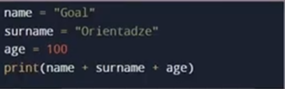
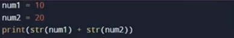
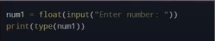
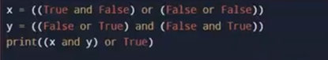
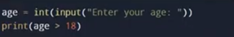

რომელ ბიბლიოთეკას ვიყენებთ პითონში გეომეტრიული ფიგურების ასაგებად?
turle, from turtle import*
რომელ ფუნქციას ვიყენებთ როდესაც გვინდა რომ ტერმინალში მოვახდინოთ დაბეჭდვა?
print
პითონის გამოყენებით შეუძლებელია ალგორითმების აგება
False
ათწილადებზე სამუშაოდ რომელ მონაცემთა ტიპს ვიყენებთ?
Float
რომელია პითონისთვის სწორი კომენტარი?
#
რომელ ფუნქციას ვიყენებთ ტერმინალიდან ტექსტის ასაღებად?
input
ინფუთიდან მირებული ინდფორმაცია ინახება სტრინგის სახით
true
როგორ ვამოწმებთ მონაცემთა ტიპს?
type()-print(type(55))-------
რომელ ცვლადი ინახავს ათწილადს?
x=10/2, რადგან ინტეჯერების გაყოფის შედეგი ტერმინალში ყოველთვის ათწილადია
რომელ ვარიანტშია ფითონის ცვლადი სწორად შექმნილი?
x=12
რას გამოიტანს კოდი?

Error,სტრინგს ინტეჯერს ვერ დავუმატებთ
რას გამოიტანს კოდი?

1020, სტრრინგ მიემატა სტრინგი, კონკატინაციის შედეგი
რას გამოიტანს კოდი როდესაც მომხმარებელი შეიტანს 7-ს?

class Float
True or False

True, or(ლოგიკური ოპერატორი) ერთერთი თუ არის True, ესეიგი ჭეშმარიტია
რას გამოიტანს კოდი როდესაც მომხმარებელი შეიტანს 20-ს

True
რას დაგვიბეჭდავს ეს კოდი ტერმინალში?
print(type('Hello World!'))
class str>
როგორ შევქმნათ პითონში კომენტარი?
#
რისთვის ვიყენებთ range() ფუნქციას>
იმისთვის, რომ შევქმნათ რიცვების გარკვეული დიაპაზონი,გვქონდეს თანმიმდევრობა
სტრინგების კონკატინაციისთვის რომ ოპერატორს ვიყენებთ
+
რომელი არ არის სწორი მონაცემთა ტიპი?
real
რომელი ფუნქციის გამოყენებით შეიძლება მომხმარებელს შემოვატანინოთ ინფორმაცია?
input()
რომელი სიტყით შეიქმნება ციკლი?
for(keyword)
რომელი სიტყვტ გადავქაცევთ ტექსტურ ინფორმაციას ათწილადად?
float()
რას დაგვიბეჭდავს print(2>3)
False
რომელი კოდით ვქმნით უსასრულო ციკლს>
While True:
რას დაგვიბეჭდავს კოდი print('Hello' + 'World')
Hello World
print(4%2)
0, ნაშთი გვექნება 0
რომელია ფითონის ფაილის სწორი დაბოლოება?
.py
print(10==10)
True ,10 უდრის 10-ს
რომელია სწორი ცვლადის სახელი?
_var_name, ცვლადის სახელს ვერ დავიწყებთ რიცხვით, და არც გამოტოვებები შეიძლება
რას დაგვიბეჭდავს კოდიprint('5'*3)
დაგვინეჭდავს ---555,რადგან სტრინგს ვამრავლებთ სამზე, მეორდება სამჯერ
რას დაგვიბეჭდავს კოდი print(Hello[-1])
o, რადგან -1-ით ვწვდებით სიტყვის ბოლო ინდექსს
print(list(range(2,10,2)))
2,4,6,8-- range ფუნქციის გამოყენებით ვბეჭდავთ 2 დან 10მდე დიაპაზონის რიცხვებს, 2ის შუალედით,
ხოლო list() მონაცემთა ტიპის გამოყენებით გარდავქმნით სიად
რისთვინა ვიყენებთ While ციკლს?
სანამ ციკლის პირობა არ შესრულდება, არ იქნება True , მანამდე გაეშვება კოდი უსასრულოდ
რომელი წინადადებაა სწორი?
While ციკლი შეიძლება უსასრულოდ გაგრძელდეს სანამ მისი პირობა სიმართლეა
Boolean მონაცემთა ტიპის მნიშვნელობებია
True და False
რომელი იქნება True?
1<=1, 1 ნაკლები არა, მაგრამ ტოლია 1-ის ამიტომ its True
რომელი ოპერატორით ვამოწმებთ ორივე Boolean არის თუ არა True
and ოპერატორით აუცილებლად ორივე უნდა იყოს ჭეშმარიტი
როგორ დავბეჭდოთ 30? my_list=[10,20,30,40]
my_list[2], 30 დგას მეორე ინდექსსზე.
რომელია სწორი პითონის საი
List=[1,2,3]
რას ნიშნავს HTML?
HyperText Markup Language
რა არის head თეგის დანიშნულება
საიტის ტექნიკური ინფორმაციის შენახვა
რომელი თეგით შეიქმნება იქმნება hiperlnk
a თეგით
ყველაზე დიდი სათაური რომელი თეგით იქმნება?
h1
რომელი ატრიბუტტ ვწერთ სურატს ალტერნატიულ ტექსტს?
alt atribute
რაში გამოიყენება title თეგი
HTML დოკუმენტის სათაურის შესაქმნელად
ხაზის გასაწყვეტად რომელ თეგს ვიყენებთ?
br
დაულაგებელი სიის სესაქმნელად რომელ ელემენტს ვიყენებთ
ul- unordered list
როგორ შევქმნათ checkbox
input type='checkbox/p>
რომელი ატრიბუტით შეგვიძლიაcss-ის გაწერა?
style
ტექსტის შესაყვამი ველი როგორ შევქმნათ?
input type='text'